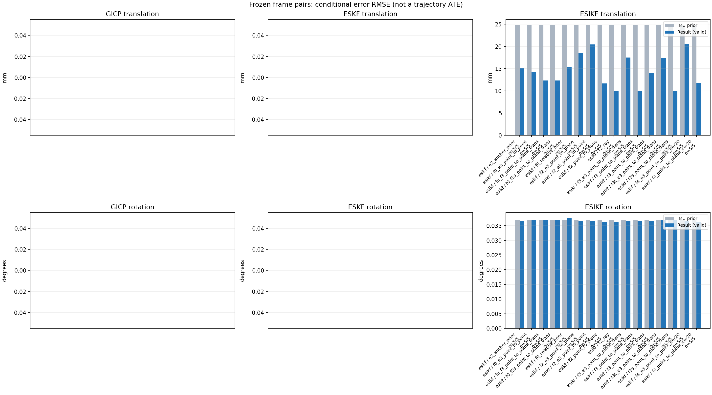

20261015_112940_pitch_up · depth=disparity_cache · cache=1c8588915031544c1d49
模型视差：/home/ubuntu22/slam/SIO_SLAM/models/tensorrt/disp_896x448_fp16.plan；engine SHA256=604cf6ac1f705c877260711730dd5d2d58c2a21f3020c03c668401ef7fb1e768。输入为生产裁剪与光照处理后的 RGB 0..255；此实验使用原始浮点像素视差，不应用完整前端的邻域视差后处理。
原始 ONNX SHA256：e9f49736a65d68d06681add463866b6defdf78fdd7f4f50f6cc941b682fdc0bc。
代价体图改写验证：ONNX Runtime 固定随机特征输入，最大绝对误差 0；该项检查图改写，完整模型精度仍需由录制数据评估。
配准代码版本：744ac2d993ae629b0cc44a3b1d995e04ab4fad48；观测生成版本：744ac2d993ae629b0cc44a3b1d995e04ab4fad48。
固定图像对与纯 IMU 先验；ESKF 回放固定 GICP 观测，ESIKF 直接读取点云。真值只用于此报告。
同时查看 converged 与 solver_status：上游默认 Stereo 在 max_iter / stopped_at_minimum 时也可能置 converged=true。valid 表示输入检查通过，不表示精度提升。欧氏 GICP 未提供独立的点距 RMSE，该列显示 NaN。
误差按每对图像的锚点计算，单位 m / degrees。此处 RMSE 不是全序列 ATE；末帧受同一锚点条件约束。NIS 与条件马氏距离是诊断量，少量相关图像对不能用于宣称协方差已校准。
全部指标 CSV · R / P 矩阵 CSV · Stereo 求解逐轮 CSV · ESIKF 逐轮轨迹 CSV · 末轮 H / R / K_pose 矩阵 CSV · 配置快照 · 矢量图
unflagged 排除纯惯性先验平移误差超过 50 mm 的图像对；whitened 为误差按协方差白化后的每自由度均值，协方差与实际误差相符时约为 1。prior_whitened 用真值误差只检验先验 P；NIS 为 ESIKF 首轮 rᵀ(P+R)⁻¹r，不用真值，检验的是 P+R 的总量，单靠它分不开 P 与 R，偏差、错误对应和线性化误差也会抬高它。观测方差超过先验方差 1e+04 倍的方向视为不可观，从 NIS 及其自由度中去掉（nis_dof）。一致时 nis_per_dof 均值约 1、nis_over_chi2_median 中位数约 1；帧对少且共享序列，超出 95% 分位的比例只作参考。每轮重新关联时首轮只走到观测的一部分，nis 会偏小；nis_final 用最后一轮线性化点的创新 r_v + e_j，应以它为准。
| stage | method | variant | valid | total | result_translation_rmse_m | result_rotation_rmse_deg | result_translation_median_m | result_rotation_median_deg | result_translation_rmse_unflagged_m | result_rotation_rmse_unflagged_deg | improved_translation | improved_rotation | posterior_whitened_by_P_rot_mean | posterior_whitened_by_P_trans_mean | prior_whitened_by_P_rot_mean | prior_whitened_by_P_trans_mean | nis_per_dof_mean | nis_over_chi2_median_median | nis_exceeds_chi2_95_fraction | nis_final_per_dof_mean | nis_final_over_chi2_median_median | nis_final_exceeds_chi2_95_fraction |
|---|---|---|---|---|---|---|---|---|---|---|---|---|---|---|---|---|---|---|---|---|---|---|
| esikf | esikf | e2_anchor_prior | 5 | 5 | 0.0151 | 0.03672 | 0.0090359 | 0.01531 | 0.0151 | 0.03672 | 2 | 2 | 161.7 | 714.52 | 144.89 | 17.534 | 10.366 | 6.5616 | 1 | 10.553 | 8.9679 | 1 |
| esikf | esikf | f0_e3_point_to_point | 5 | 5 | 0.014252 | 0.03694 | 0.0088143 | 0.016144 | 0.014252 | 0.03694 | 3 | 3 | 108.46 | 8.1859 | 108.01 | 0.063026 | 0.071061 | 0.017674 | 0 | 0.06412 | 0.035016 | 0 |
| esikf | esikf | f0_f3_point_to_plane_trans | 5 | 5 | 0.01234 | 0.036936 | 0.010621 | 0.016126 | 0.01234 | 0.036936 | 2 | 3 | 108.55 | 82.632 | 108.01 | 0.063026 | 0.42113 | 0.057312 | 0 | 0.65018 | 0.13815 | 0 |
| esikf | esikf | f0_f3s_point_to_plane_trans | 5 | 5 | 0.012322 | 0.036943 | 0.010313 | 0.016158 | 0.012322 | 0.036943 | 2 | 0 | 108.01 | 82.305 | 108.01 | 0.063026 | 0.42113 | 0.057312 | 0 | 0.6481 | 0.13968 | 0 |
| esikf | esikf | f0_relative_prior | 5 | 5 | 0.015324 | 0.037605 | 0.0097138 | 0.016136 | 0.015324 | 0.037605 | 2 | 2 | 120.38 | 741.21 | 108.01 | 0.063026 | 9.1218 | 4.5792 | 1 | 7.4225 | 8.5346 | 1 |
| esikf | esikf | f2_e3_point_to_plane | 5 | 5 | 0.018434 | 0.036647 | 0.0068457 | 0.016156 | 0.018434 | 0.036647 | 5 | 3 | 145.19 | 18.426 | 144.89 | 17.534 | 0.80431 | 0.6253 | 0.2 | 1.1713 | 0.72025 | 0.2 |
| esikf | esikf | f2_e3_point_to_point | 5 | 5 | 0.020486 | 0.036572 | 0.0069277 | 0.016136 | 0.020486 | 0.036572 | 4 | 3 | 145.54 | 27.556 | 144.89 | 17.534 | 0.1863 | 0.071974 | 0 | 0.49188 | 0.11614 | 0 |
| esikf | esikf | f2_point_to_plane | 5 | 5 | 0.011701 | 0.036309 | 0.005494 | 0.016678 | 0.011701 | 0.036309 | 4 | 2 | 150.41 | 71.698 | 144.89 | 17.534 | 17.578 | 13.942 | 1 | 13.911 | 14.56 | 1 |
| esikf | esikf | f2_ray | 5 | 5 | 0.0099972 | 0.036192 | 0.0055828 | 0.014741 | 0.0099972 | 0.036192 | 3 | 3 | 144.83 | 39.532 | 144.89 | 17.534 | 14.565 | 19.069 | 0.8 | 19.838 | 24.532 | 0.8 |
| esikf | esikf | f3_e3_point_to_plane_trans | 5 | 5 | 0.017505 | 0.036543 | 0.006899 | 0.01609 | 0.017505 | 0.036543 | 4 | 3 | 145.08 | 16.995 | 144.89 | 17.534 | 2.5904 | 1.2083 | 0.4 | 3.3959 | 2.0065 | 0.4 |
| esikf | esikf | f3_point_to_plane_trans | 5 | 5 | 0.010035 | 0.03653 | 0.0078955 | 0.015233 | 0.010035 | 0.03653 | 2 | 3 | 153.93 | 50.2 | 144.89 | 17.534 | 26.046 | 12.252 | 0.8 | 35.156 | 25.294 | 0.8 |
| esikf | esikf | f3_point_to_point_trans | 5 | 5 | 0.014065 | 0.03669 | 0.0066951 | 0.017884 | 0.014065 | 0.03669 | 3 | 2 | 162.74 | 819.15 | 144.89 | 17.534 | 4.2205 | 3.1049 | 0.4 | 30.593 | 27.041 | 1 |
| esikf | esikf | f3s_e3_point_to_plane_trans | 5 | 5 | 0.017449 | 0.036943 | 0.0068991 | 0.016158 | 0.017449 | 0.036943 | 4 | 0 | 144.89 | 16.962 | 144.89 | 17.534 | 2.5904 | 1.2083 | 0.4 | 3.4124 | 2.0147 | 0.4 |
| esikf | esikf | f3s_point_to_plane_trans | 5 | 5 | 0.010011 | 0.036943 | 0.0078743 | 0.016158 | 0.010011 | 0.036943 | 2 | 0 | 144.89 | 50.245 | 144.89 | 17.534 | 26.046 | 12.252 | 0.8 | 35.41 | 25.735 | 0.8 |
| esikf | esikf | f4_e3_point_to_point_iter20 | 5 | 5 | 0.020582 | 0.03658 | 0.0069277 | 0.016136 | 0.020582 | 0.03658 | 4 | 3 | 145.56 | 27.48 | 144.89 | 17.534 | 0.1863 | 0.071974 | 0 | 0.50959 | 0.11614 | 0.2 |
| esikf | esikf | f4_point_to_plane_iter20 | 5 | 5 | 0.011838 | 0.036334 | 0.005494 | 0.016678 | 0.011838 | 0.036334 | 4 | 2 | 150.48 | 73.089 | 144.89 | 17.534 | 17.578 | 13.942 | 1 | 13.874 | 14.56 | 1 |

| stage | case | method | variant | status | solver_status | inliers | converged | covariance_convention | covariance_from_hessian | fitness | registration_rmse_m | prior_trans_error_m | result_trans_error_m | prior_rot_error_deg | result_rot_error_deg | prior_flagged | R_rot_trace_rad2 | R_pos_trace_m2 | nis_regularized | posterior_whitened_by_P_rot | posterior_whitened_by_P_trans | prior_whitened_by_P_rot | prior_whitened_by_P_trans | nis_per_dof | nis_dof | nis_final_per_dof | nis_final_dof |
|---|---|---|---|---|---|---|---|---|---|---|---|---|---|---|---|---|---|---|---|---|---|---|---|---|---|---|---|
| esikf | static_start | esikf | e2_anchor_prior | updated | converged | 5193 | 1 | 1 | 0 | 0 | 0.00011999 | 0.00016266 | 0.0068762 | 0.00711 | 0 | 4.7347e-07 | 1.1074e-06 | nan | 15.24 | 0.20113 | 14.099 | 0.054398 | 7.7671 | 6 | 7.8305 | 6 | |
| esikf | static_start | esikf | f0_relative_prior | updated | converged | 5193 | 1 | 1 | 0 | 0 | 0.00011999 | 0.00036359 | 0.0068762 | 0.0070805 | 0 | 4.734e-07 | 1.1073e-06 | nan | 14.895 | 0.50592 | 13.935 | 0.0035177 | 7.5901 | 6 | 7.7154 | 6 | |
| esikf | static_start | esikf | f2_point_to_plane | updated | converged | 5193 | 1 | 1 | 0 | 0 | 0.00011999 | 9.3724e-05 | 0.0068762 | 0.006948 | 0 | 1.7996e-06 | 3.6563e-06 | nan | 14.434 | 0.039902 | 14.099 | 0.054398 | 3.4995 | 6 | 3.5138 | 6 | |
| esikf | static_start | esikf | f2_ray | updated | converged | 5193 | 1 | 1 | 0 | 0 | 0.00011999 | 0.00018383 | 0.0068762 | 0.0068794 | 0 | 0.055292 | 4.6175e-05 | nan | 14.112 | 0.14807 | 14.099 | 0.054398 | 0.86343 | 3 | 0.84654 | 3 | |
| esikf | static_start | esikf | f3_point_to_point_trans | updated | converged | 5335 | 1 | 1 | 0 | 0 | 0.00011999 | 0.0033611 | 0.0068762 | 0.0069409 | 0 | 0.45671 | 1.0664e-06 | nan | 14.351 | 105 | 14.099 | 0.054398 | 7.7003 | 3 | 68.128 | 3 | |
| esikf | static_start | esikf | f3_point_to_plane_trans | updated | converged | 5193 | 1 | 1 | 0 | 0 | 0.00011999 | 0.00027732 | 0.0068762 | 0.0068817 | 0 | 1.8 | 3.6546e-06 | nan | 14.121 | 0.35446 | 14.099 | 0.054398 | 1.6995 | 3 | 1.666 | 3 | |
| esikf | static_start | esikf | f0_f3_point_to_plane_trans | updated | converged | 5193 | 1 | 1 | 0 | 0 | 0.00011999 | 0.0015337 | 0.0068762 | 0.0068827 | 0 | 1.7904 | 3.6561e-06 | nan | 13.962 | 1.9774 | 13.935 | 0.0035177 | 0.38771 | 3 | 0.47007 | 3 | |
| esikf | static_start | esikf | f3s_point_to_plane_trans | updated | converged | 5193 | 1 | 1 | 0 | 0 | 0.00011999 | 0.00027732 | 0.0068762 | 0.0068762 | 0 | 1.8 | 3.6546e-06 | nan | 14.099 | 0.35445 | 14.099 | 0.054398 | 1.6995 | 3 | 1.666 | 3 | |
| esikf | static_start | esikf | f0_f3s_point_to_plane_trans | updated | converged | 5193 | 1 | 1 | 0 | 0 | 0.00011999 | 0.0015333 | 0.0068762 | 0.0068762 | 0 | 1.7904 | 3.6561e-06 | nan | 13.935 | 1.9768 | 13.935 | 0.0035177 | 0.38771 | 3 | 0.46989 | 3 | |
| esikf | static_start | esikf | f4_point_to_plane_iter20 | updated | converged | 5193 | 1 | 1 | 0 | 0 | 0.00011999 | 9.3724e-05 | 0.0068762 | 0.006948 | 0 | 1.7996e-06 | 3.6563e-06 | nan | 14.434 | 0.039902 | 14.099 | 0.054398 | 3.4995 | 6 | 3.5138 | 6 | |
| esikf | static_start | esikf | f2_e3_point_to_point | updated | converged | 5193 | 1 | 1 | 0 | 0 | 0.00011999 | 0.00011923 | 0.0068762 | 0.006878 | 0 | 5.2635e-05 | 9.2117e-05 | nan | 14.108 | 0.054405 | 14.099 | 0.054398 | 0.0019453 | 3 | 0.0019453 | 3 | |
| esikf | static_start | esikf | f0_e3_point_to_point | updated | converged | 5193 | 1 | 1 | 0 | 0 | 0.00011999 | 0.00011991 | 0.0068762 | 0.0068781 | 0 | 5.2635e-05 | 9.2117e-05 | nan | 13.943 | 0.0037747 | 13.935 | 0.0035177 | 0.001688 | 3 | 0.001688 | 3 | |
| esikf | static_start | esikf | f2_e3_point_to_plane | updated | converged | 5193 | 1 | 1 | 0 | 0 | 0.00011999 | 0.00011501 | 0.0068762 | 0.0068776 | 0 | 0.00010516 | 0.00013134 | nan | 14.105 | 0.050298 | 14.099 | 0.054398 | 0.022631 | 3 | 0.022631 | 3 | |
| esikf | static_start | esikf | f3_e3_point_to_plane_trans | updated | converged | 5193 | 1 | 1 | 0 | 0 | 0.00011999 | 0.00011843 | 0.0068762 | 0.0068764 | 0 | 1.7997 | 0.00013134 | nan | 14.1 | 0.053333 | 14.099 | 0.054398 | 0.056944 | 3 | 0.056944 | 3 | |
| esikf | static_start | esikf | f3s_e3_point_to_plane_trans | updated | converged | 5193 | 1 | 1 | 0 | 0 | 0.00011999 | 0.00011843 | 0.0068762 | 0.0068762 | 0 | 1.7997 | 0.00013134 | nan | 14.099 | 0.053333 | 14.099 | 0.054398 | 0.056944 | 3 | 0.056944 | 3 | |
| esikf | static_start | esikf | f4_e3_point_to_point_iter20 | updated | converged | 5193 | 1 | 1 | 0 | 0 | 0.00011999 | 0.00011923 | 0.0068762 | 0.006878 | 0 | 5.2635e-05 | 9.2117e-05 | nan | 14.108 | 0.054405 | 14.099 | 0.054398 | 0.0019453 | 3 | 0.0019453 | 3 | |
| esikf | sync_motion | esikf | e2_anchor_prior | updated | converged | 5507 | 1 | 1 | 0 | 0 | 0.001091 | 0.0027468 | 0.035414 | 0.036211 | 0 | 4.4801e-07 | 1.0789e-06 | nan | 386.69 | 50.07 | 360.44 | 2.6744 | 5.8486 | 6 | 12.318 | 6 | |
| esikf | sync_motion | esikf | f0_relative_prior | updated_not_converged | max_iterations | 5655 | 0 | 1 | 0 | 0 | 0.001091 | 0.0087767 | 0.035414 | 0.035281 | 0 | 4.3736e-07 | 1.0447e-06 | nan | 347.48 | 375.24 | 348.19 | 0.007897 | 2.6148 | 6 | 3.0507 | 6 | |
| esikf | sync_motion | esikf | f2_point_to_plane | updated | converged | 5498 | 1 | 1 | 0 | 0 | 0.001091 | 0.0011264 | 0.035414 | 0.035652 | 0 | 1.814e-06 | 3.7443e-06 | nan | 370.48 | 3.3121 | 360.44 | 2.6744 | 23.522 | 6 | 24.523 | 6 | |
| esikf | sync_motion | esikf | f2_ray | updated | converged | 5494 | 1 | 1 | 0 | 0 | 0.001091 | 0.0010157 | 0.035414 | 0.035647 | 0 | 0.011263 | 1.5263e-05 | nan | 369.11 | 2.5074 | 360.44 | 2.6744 | 28.574 | 3 | 32.918 | 3 | |
| esikf | sync_motion | esikf | f3_point_to_point_trans | updated | converged | 5487 | 1 | 1 | 0 | 0 | 0.001091 | 0.0035381 | 0.035414 | 0.037277 | 0 | 0.44936 | 1.0806e-06 | nan | 415.73 | 93.185 | 360.44 | 2.6744 | 10.365 | 3 | 46.925 | 3 | |
| esikf | sync_motion | esikf | f3_point_to_plane_trans | updated | converged | 5501 | 1 | 1 | 0 | 0 | 0.001091 | 0.0037489 | 0.035414 | 0.037336 | 0 | 1.8115 | 3.6987e-06 | nan | 407.74 | 41.834 | 360.44 | 2.6744 | 101.49 | 3 | 116.7 | 3 | |
| esikf | sync_motion | esikf | f0_f3_point_to_plane_trans | updated_not_converged | max_iterations | 5910 | 0 | 1 | 0 | 0 | 0.001091 | 0.016107 | 0.035414 | 0.035481 | 0 | 1.6903 | 3.2566e-06 | nan | 350.22 | 214.46 | 348.19 | 0.007897 | 1.62 | 3 | 2.5046 | 3 | |
| esikf | sync_motion | esikf | f3s_point_to_plane_trans | updated | converged | 5502 | 1 | 1 | 0 | 0 | 0.001091 | 0.0037652 | 0.035414 | 0.035414 | 0 | 1.8161 | 3.6954e-06 | nan | 360.44 | 42.209 | 360.44 | 2.6744 | 101.49 | 3 | 117.57 | 3 | |
| esikf | sync_motion | esikf | f0_f3s_point_to_plane_trans | updated_not_converged | max_iterations | 5909 | 0 | 1 | 0 | 0 | 0.001091 | 0.016088 | 0.035414 | 0.035414 | 0 | 1.6905 | 3.2622e-06 | nan | 348.19 | 213.29 | 348.19 | 0.007897 | 1.62 | 3 | 2.4935 | 3 | |
| esikf | sync_motion | esikf | f4_point_to_plane_iter20 | updated | converged | 5498 | 1 | 1 | 0 | 0 | 0.001091 | 0.0011264 | 0.035414 | 0.035652 | 0 | 1.814e-06 | 3.7443e-06 | nan | 370.48 | 3.3121 | 360.44 | 2.6744 | 23.522 | 6 | 24.523 | 6 | |
| esikf | sync_motion | esikf | f2_e3_point_to_point | updated | converged | 5495 | 1 | 1 | 0 | 0 | 0.001091 | 0.0010861 | 0.035414 | 0.035432 | 0 | 5.0119e-05 | 9.0749e-05 | nan | 361.11 | 2.6791 | 360.44 | 2.6744 | 0.23914 | 3 | 0.23914 | 3 | |
| esikf | sync_motion | esikf | f0_e3_point_to_point | updated | converged | 5505 | 1 | 1 | 0 | 0 | 0.001091 | 0.0039199 | 0.035414 | 0.03543 | 0 | 4.9772e-05 | 8.9341e-05 | nan | 349.04 | 1.089 | 348.19 | 0.007897 | 0.036835 | 3 | 0.17396 | 3 | |
| esikf | sync_motion | esikf | f2_e3_point_to_plane | updated | converged | 5495 | 1 | 1 | 0 | 0 | 0.001091 | 0.00108 | 0.035414 | 0.035429 | 0 | 0.00010675 | 0.00013477 | nan | 360.96 | 2.622 | 360.44 | 2.6744 | 0.56804 | 3 | 0.56804 | 3 | |
| esikf | sync_motion | esikf | f3_e3_point_to_plane_trans | updated | converged | 5489 | 1 | 1 | 0 | 0 | 0.001091 | 0.0010766 | 0.035414 | 0.035481 | 0 | 1.8276 | 0.00013499 | nan | 362.05 | 2.5909 | 360.44 | 2.6744 | 3.7889 | 3 | 3.761 | 3 | |
| esikf | sync_motion | esikf | f3s_e3_point_to_plane_trans | updated | converged | 5489 | 1 | 1 | 0 | 0 | 0.001091 | 0.0010766 | 0.035414 | 0.035414 | 0 | 1.8276 | 0.00013499 | nan | 360.44 | 2.5909 | 360.44 | 2.6744 | 3.7889 | 3 | 3.7597 | 3 | |
| esikf | sync_motion | esikf | f4_e3_point_to_point_iter20 | updated | converged | 5495 | 1 | 1 | 0 | 0 | 0.001091 | 0.0010861 | 0.035414 | 0.035432 | 0 | 5.0119e-05 | 9.0749e-05 | nan | 361.11 | 2.6791 | 360.44 | 2.6744 | 0.23914 | 3 | 0.23914 | 3 | |
| esikf | main_motion | esikf | e2_anchor_prior | updated_not_converged | max_iterations | 18092 | 0 | 1 | 0 | 0 | 0.0068944 | 0.0090359 | 0.016158 | 0.01531 | 0 | 1.3338e-07 | 8.7234e-07 | nan | 87.523 | 186.71 | 81.942 | 19.538 | 4.3045 | 6 | 6.0677 | 6 | |
| esikf | main_motion | esikf | f0_relative_prior | updated_not_converged | max_iterations | 18098 | 0 | 1 | 0 | 0 | 0.0068944 | 0.0097138 | 0.016158 | 0.016136 | 0 | 1.3307e-07 | 8.6854e-07 | nan | 75.76 | 188.38 | 73.687 | 0.055449 | 4.0816 | 6 | 5.6515 | 6 | |
| esikf | main_motion | esikf | f2_point_to_plane | updated | converged | 17989 | 1 | 1 | 0 | 0 | 0.0068944 | 0.005494 | 0.016158 | 0.016678 | 0 | 8.718e-07 | 3.6463e-06 | nan | 98.582 | 40.874 | 81.942 | 19.538 | 12.428 | 6 | 12.978 | 6 | |
| esikf | main_motion | esikf | f2_ray | updated | converged | 18047 | 1 | 1 | 0 | 0 | 0.0068944 | 0.01013 | 0.016158 | 0.014741 | 0 | 0.010474 | 2.0135e-05 | nan | 75.373 | 86.777 | 81.942 | 19.538 | 22.224 | 3 | 16.413 | 3 | |
| esikf | main_motion | esikf | f3_point_to_point_trans | updated_not_converged | max_iterations | 17991 | 0 | 1 | 0 | 0 | 0.0068944 | 0.0066951 | 0.016158 | 0.017884 | 0 | 0.13534 | 8.8625e-07 | nan | 119.13 | 263.33 | 81.942 | 19.538 | 0.35351 | 3 | 11.214 | 3 | |
| esikf | main_motion | esikf | f3_point_to_plane_trans | updated | converged | 18021 | 1 | 1 | 0 | 0 | 0.0068944 | 0.0078955 | 0.016158 | 0.015233 | 0 | 0.87087 | 3.6413e-06 | nan | 82.629 | 46.483 | 81.942 | 19.538 | 9.6628 | 3 | 14.495 | 3 | |
| esikf | main_motion | esikf | f0_f3_point_to_plane_trans | updated_not_converged | max_iterations | 18017 | 0 | 1 | 0 | 0 | 0.0068944 | 0.010621 | 0.016158 | 0.016126 | 0 | 0.89845 | 3.6013e-06 | nan | 74.233 | 62.597 | 73.687 | 0.055449 | 0.0452 | 3 | 0.10895 | 3 | |
| esikf | main_motion | esikf | f3s_point_to_plane_trans | updated | converged | 18020 | 1 | 1 | 0 | 0 | 0.0068944 | 0.0078743 | 0.016158 | 0.016158 | 0 | 0.86922 | 3.6388e-06 | nan | 81.942 | 46.257 | 81.942 | 19.538 | 9.6628 | 3 | 14.462 | 3 | |
| esikf | main_motion | esikf | f0_f3s_point_to_plane_trans | updated_not_converged | max_iterations | 18008 | 0 | 1 | 0 | 0 | 0.0068944 | 0.010313 | 0.016158 | 0.016158 | 0 | 0.89573 | 3.5939e-06 | nan | 73.687 | 60.055 | 73.687 | 0.055449 | 0.0452 | 3 | 0.11016 | 3 | |
| esikf | main_motion | esikf | f4_point_to_plane_iter20 | updated | converged | 17989 | 1 | 1 | 0 | 0 | 0.0068944 | 0.005494 | 0.016158 | 0.016678 | 0 | 8.718e-07 | 3.6463e-06 | nan | 98.582 | 40.874 | 81.942 | 19.538 | 12.428 | 6 | 12.978 | 6 | |
| esikf | main_motion | esikf | f2_e3_point_to_point | updated | converged | 18076 | 1 | 1 | 0 | 0 | 0.0068944 | 0.0069277 | 0.016158 | 0.016136 | 0 | 1.4927e-05 | 7.2617e-05 | nan | 83.09 | 20.922 | 81.942 | 19.538 | 0.026903 | 4 | 0.026903 | 4 | |
| esikf | main_motion | esikf | f0_e3_point_to_point | updated_not_converged | max_iterations | 18087 | 0 | 1 | 0 | 0 | 0.0068944 | 0.0088143 | 0.016158 | 0.016144 | 0 | 1.4834e-05 | 7.2537e-05 | nan | 74.344 | 1.9654 | 73.687 | 0.055449 | 0.0089935 | 4 | 0.01253 | 4 | |
| esikf | main_motion | esikf | f2_e3_point_to_plane | updated | converged | 18066 | 1 | 1 | 0 | 0 | 0.0068944 | 0.0068457 | 0.016158 | 0.016156 | 0 | 5.036e-05 | 0.00012746 | nan | 82.874 | 20.019 | 81.942 | 19.538 | 0.11727 | 3 | 0.11204 | 3 | |
| esikf | main_motion | esikf | f3_e3_point_to_plane_trans | updated | converged | 18076 | 1 | 1 | 0 | 0 | 0.0068944 | 0.006899 | 0.016158 | 0.01609 | 0 | 0.85891 | 0.00012746 | nan | 82.253 | 19.629 | 81.942 | 19.538 | 0.64753 | 3 | 0.7015 | 3 | |
| esikf | main_motion | esikf | f3s_e3_point_to_plane_trans | updated | converged | 18077 | 1 | 1 | 0 | 0 | 0.0068944 | 0.0068991 | 0.016158 | 0.016158 | 0 | 0.85886 | 0.00012745 | nan | 81.942 | 19.63 | 81.942 | 19.538 | 0.64753 | 3 | 0.70198 | 3 | |
| esikf | main_motion | esikf | f4_e3_point_to_point_iter20 | updated | converged | 18076 | 1 | 1 | 0 | 0 | 0.0068944 | 0.0069277 | 0.016158 | 0.016136 | 0 | 1.4927e-05 | 7.2617e-05 | nan | 83.09 | 20.922 | 81.942 | 19.538 | 0.026903 | 4 | 0.026903 | 4 | |
| esikf | main_motion_long | esikf | e2_anchor_prior | updated_not_converged | max_iterations | 17008 | 0 | 1 | 0 | 0 | 0.04226 | 0.01425 | 0.072496 | 0.071684 | 0 | 9.9544e-08 | 9.3332e-07 | nan | 316.33 | 399.07 | 265.95 | 18.678 | 31.445 | 6 | 18.556 | 6 | |
| esikf | main_motion_long | esikf | f0_relative_prior | updated_not_converged | max_iterations | 16992 | 0 | 1 | 0 | 0 | 0.04226 | 0.014014 | 0.072496 | 0.074194 | 0 | 9.9999e-08 | 9.4681e-07 | nan | 161.15 | 361.49 | 102.93 | 0.055084 | 28.97 | 6 | 13.087 | 6 | |
| esikf | main_motion_long | esikf | f2_point_to_plane | updated_not_converged | max_iterations | 16876 | 0 | 1 | 0 | 0 | 0.04226 | 0.010417 | 0.072496 | 0.070633 | 0 | 8.4735e-07 | 4.113e-06 | nan | 266.58 | 42.167 | 265.95 | 18.678 | 45.249 | 6 | 10.814 | 6 | |
| esikf | main_motion_long | esikf | f2_ray | updated_not_converged | max_iterations | 16806 | 0 | 1 | 0 | 0 | 0.04226 | 0.0055828 | 0.072496 | 0.070782 | 0 | 0.011874 | 2.4646e-05 | nan | 264.03 | 5.0939 | 265.95 | 18.678 | 6.1261 | 3 | 19.347 | 3 | |
| esikf | main_motion_long | esikf | f3_point_to_point_trans | updated_not_converged | max_iterations | 16796 | 0 | 1 | 0 | 0 | 0.04226 | 0.0081079 | 0.072496 | 0.070489 | 0 | 0.1009 | 9.5488e-07 | nan | 262.77 | 243.98 | 265.95 | 18.678 | 2.4487 | 3 | 21.326 | 3 | |
| esikf | main_motion_long | esikf | f3_point_to_plane_trans | updated_not_converged | max_iterations | 16835 | 0 | 1 | 0 | 0 | 0.04226 | 0.0087695 | 0.072496 | 0.070675 | 0 | 0.8364 | 4.0964e-06 | nan | 263.59 | 35.686 | 265.95 | 18.678 | 14.1 | 3 | 19.948 | 3 | |
| esikf | main_motion_long | esikf | f0_f3_point_to_plane_trans | updated | converged | 16828 | 1 | 1 | 0 | 0 | 0.04226 | 0.0084236 | 0.072496 | 0.072458 | 0 | 0.83287 | 3.9964e-06 | nan | 103.08 | 36.554 | 102.93 | 0.055084 | 0.038975 | 3 | 0.058867 | 3 | |
| esikf | main_motion_long | esikf | f3s_point_to_plane_trans | updated | converged | 16816 | 1 | 1 | 0 | 0 | 0.04226 | 0.0087931 | 0.072496 | 0.072496 | 0 | 0.83411 | 4.0535e-06 | nan | 265.95 | 36.783 | 265.95 | 18.678 | 14.1 | 3 | 20.296 | 3 | |
| esikf | main_motion_long | esikf | f0_f3s_point_to_plane_trans | updated_not_converged | max_iterations | 16826 | 0 | 1 | 0 | 0 | 0.04226 | 0.0086727 | 0.072496 | 0.072496 | 0 | 0.83237 | 4.0062e-06 | nan | 102.93 | 38.308 | 102.93 | 0.055084 | 0.038975 | 3 | 0.058733 | 3 | |
| esikf | main_motion_long | esikf | f4_point_to_plane_iter20 | updated_not_converged | max_iterations | 16895 | 0 | 1 | 0 | 0 | 0.04226 | 0.011168 | 0.072496 | 0.070697 | 0 | 8.4724e-07 | 4.1116e-06 | nan | 266.92 | 49.125 | 265.95 | 18.678 | 45.249 | 6 | 10.629 | 6 | |
| esikf | main_motion_long | esikf | f2_e3_point_to_point | updated_not_converged | max_iterations | 17049 | 0 | 1 | 0 | 0 | 0.04226 | 0.029037 | 0.072496 | 0.071548 | 0 | 1.15e-05 | 8.7277e-05 | nan | 267.33 | 26.936 | 265.95 | 18.678 | 0.6031 | 6 | 2.094 | 6 | |
| esikf | main_motion_long | esikf | f0_e3_point_to_point | updated_not_converged | max_iterations | 16905 | 0 | 1 | 0 | 0 | 0.04226 | 0.012247 | 0.072496 | 0.072484 | 0 | 1.1179e-05 | 7.9123e-05 | nan | 103.63 | 3.9563 | 102.93 | 0.055084 | 0.29241 | 6 | 0.10195 | 6 | |
| esikf | main_motion_long | esikf | f2_e3_point_to_plane | updated | converged | 17076 | 1 | 1 | 0 | 0 | 0.04226 | 0.024771 | 0.072496 | 0.071738 | 0 | 4.6998e-05 | 0.00013817 | nan | 266.16 | 13.701 | 265.95 | 18.678 | 2.7889 | 5 | 4.4335 | 5 | |
| esikf | main_motion_long | esikf | f3_e3_point_to_plane_trans | updated | converged | 17009 | 1 | 1 | 0 | 0 | 0.04226 | 0.020974 | 0.072496 | 0.071458 | 0 | 0.80784 | 0.00013722 | nan | 264.93 | 9.3845 | 265.95 | 18.678 | 7.5058 | 3 | 10.878 | 3 | |
| esikf | main_motion_long | esikf | f3s_e3_point_to_plane_trans | updated_not_converged | max_iterations | 17011 | 0 | 1 | 0 | 0 | 0.04226 | 0.020733 | 0.072496 | 0.072496 | 0 | 0.82016 | 0.00013586 | nan | 265.95 | 9.2455 | 265.95 | 18.678 | 7.5058 | 3 | 10.954 | 3 | |
| esikf | main_motion_long | esikf | f4_e3_point_to_point_iter20 | updated | converged | 17025 | 1 | 1 | 0 | 0 | 0.04226 | 0.029375 | 0.072496 | 0.071567 | 0 | 1.1502e-05 | 8.7267e-05 | nan | 267.42 | 26.552 | 265.95 | 18.678 | 0.6031 | 6 | 2.1825 | 6 | |
| esikf | static_end | esikf | e2_anchor_prior | updated_not_converged | max_iterations | 21262 | 0 | 1 | 0 | 0 | 0.035258 | 0.029117 | 0.0024039 | 0.0026469 | 0 | 7.8462e-08 | 7.9439e-07 | nan | 2.7127 | 2936.6 | 1.9972 | 46.727 | 2.4625 | 6 | 7.9935 | 6 | |
| esikf | static_end | esikf | f0_relative_prior | updated_not_converged | max_iterations | 21261 | 0 | 1 | 0 | 0 | 0.035258 | 0.028394 | 0.0024039 | 0.0032369 | 0 | 7.8303e-08 | 7.916e-07 | nan | 2.5928 | 2780.5 | 1.3346 | 0.19318 | 2.3522 | 6 | 7.6073 | 6 | |
| esikf | static_end | esikf | f2_point_to_plane | updated | converged | 21281 | 1 | 1 | 0 | 0 | 0.035258 | 0.023335 | 0.0024039 | 0.0022748 | 0 | 4.4729e-07 | 3.5502e-06 | nan | 1.9867 | 272.1 | 1.9972 | 46.727 | 3.1919 | 6 | 17.723 | 6 | |
| esikf | static_end | esikf | f2_ray | updated_not_converged | max_iterations | 21293 | 0 | 1 | 0 | 0 | 0.035258 | 0.019102 | 0.0024039 | 0.0019985 | 0 | 0.023216 | 5.3979e-05 | nan | 1.5253 | 103.13 | 1.9972 | 46.727 | 15.039 | 3 | 29.665 | 3 | |
| esikf | static_end | esikf | f3_point_to_point_trans | updated_not_converged | max_iterations | 21270 | 0 | 1 | 0 | 0 | 0.035258 | 0.029236 | 0.0024039 | 0.0021143 | 0 | 0.07616 | 7.5503e-07 | nan | 1.7234 | 3390.3 | 1.9972 | 46.727 | 0.23509 | 3 | 5.3725 | 3 | |
| esikf | static_end | esikf | f3_point_to_plane_trans | updated_not_converged | max_iterations | 21290 | 0 | 1 | 0 | 0 | 0.035258 | 0.018711 | 0.0024039 | 0.0020146 | 0 | 0.44833 | 3.5825e-06 | nan | 1.5562 | 126.64 | 1.9972 | 46.727 | 3.2742 | 3 | 22.97 | 3 | |
| esikf | static_end | esikf | f0_f3_point_to_plane_trans | updated_not_converged | max_iterations | 21295 | 0 | 1 | 0 | 0 | 0.035258 | 0.017772 | 0.0024039 | 0.002244 | 0 | 0.44753 | 3.5706e-06 | nan | 1.2349 | 97.571 | 1.3346 | 0.19318 | 0.013795 | 3 | 0.10843 | 3 | |
| esikf | static_end | esikf | f3s_point_to_plane_trans | updated_not_converged | max_iterations | 21289 | 0 | 1 | 0 | 0 | 0.035258 | 0.018641 | 0.0024039 | 0.0024039 | 0 | 0.44761 | 3.5736e-06 | nan | 1.9972 | 125.62 | 1.9972 | 46.727 | 3.2742 | 3 | 23.055 | 3 | |
| esikf | static_end | esikf | f0_f3s_point_to_plane_trans | updated_not_converged | max_iterations | 21297 | 0 | 1 | 0 | 0 | 0.035258 | 0.017786 | 0.0024039 | 0.0024039 | 0 | 0.44754 | 3.5712e-06 | nan | 1.3346 | 97.894 | 1.3346 | 0.19318 | 0.013795 | 3 | 0.10822 | 3 | |
| esikf | static_end | esikf | f4_point_to_plane_iter20 | updated | converged | 21281 | 1 | 1 | 0 | 0 | 0.035258 | 0.023335 | 0.0024039 | 0.0022748 | 0 | 4.4729e-07 | 3.5502e-06 | nan | 1.9867 | 272.1 | 1.9972 | 46.727 | 3.1919 | 6 | 17.723 | 6 | |
| esikf | static_end | esikf | f2_e3_point_to_point | updated | converged | 21273 | 1 | 1 | 0 | 0 | 0.035258 | 0.034729 | 0.0024039 | 0.0023453 | 0 | 8.8433e-06 | 6.782e-05 | nan | 2.0743 | 87.191 | 1.9972 | 46.727 | 0.060399 | 4 | 0.097462 | 4 | |
| esikf | static_end | esikf | f0_e3_point_to_point | updated_not_converged | max_iterations | 21253 | 0 | 1 | 0 | 0 | 0.035258 | 0.027793 | 0.0024039 | 0.0023418 | 0 | 8.6449e-06 | 6.5051e-05 | nan | 1.3408 | 33.915 | 1.3346 | 0.19318 | 0.015382 | 5 | 0.030474 | 5 | |
| esikf | static_end | esikf | f2_e3_point_to_plane | updated | converged | 21262 | 1 | 1 | 0 | 0 | 0.035258 | 0.03221 | 0.0024039 | 0.0022165 | 0 | 2.661e-05 | 0.00013124 | nan | 1.8469 | 55.738 | 1.9972 | 46.727 | 0.52474 | 4 | 0.72028 | 4 | |
| esikf | static_end | esikf | f3_e3_point_to_plane_trans | updated_not_converged | max_iterations | 21252 | 0 | 1 | 0 | 0 | 0.035258 | 0.032303 | 0.0024039 | 0.0023346 | 0 | 0.44358 | 0.00012988 | nan | 2.0519 | 53.318 | 1.9972 | 46.727 | 0.95296 | 3 | 1.5825 | 3 | |
| esikf | static_end | esikf | f3s_e3_point_to_plane_trans | updated_not_converged | max_iterations | 21252 | 0 | 1 | 0 | 0 | 0.035258 | 0.032307 | 0.0024039 | 0.0024039 | 0 | 0.44347 | 0.00012985 | nan | 1.9972 | 53.289 | 1.9972 | 46.727 | 0.95296 | 3 | 1.5889 | 3 | |
| esikf | static_end | esikf | f4_e3_point_to_point_iter20 | updated | converged | 21273 | 1 | 1 | 0 | 0 | 0.035258 | 0.034729 | 0.0024039 | 0.0023453 | 0 | 8.8433e-06 | 6.782e-05 | nan | 2.0743 | 87.191 | 1.9972 | 46.727 | 0.060399 | 4 | 0.097462 | 4 |